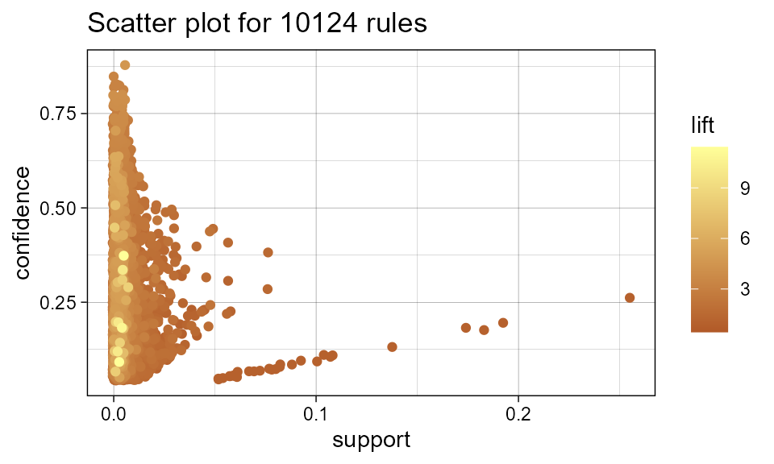
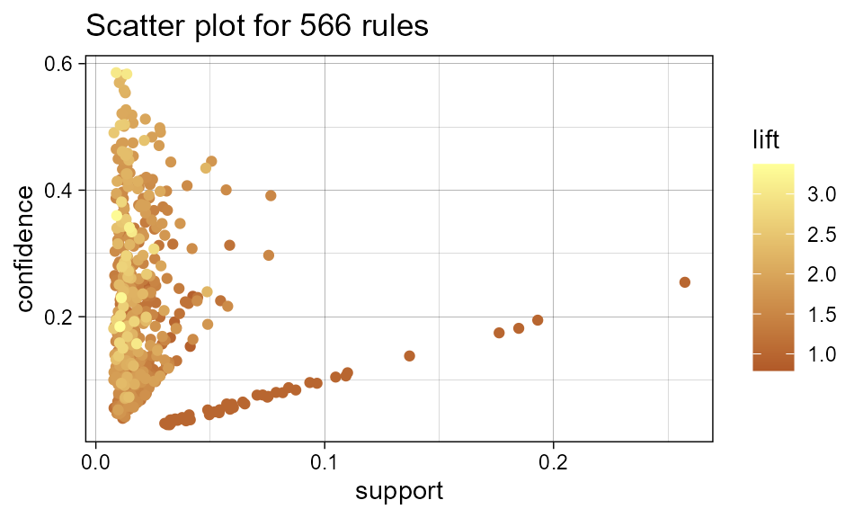
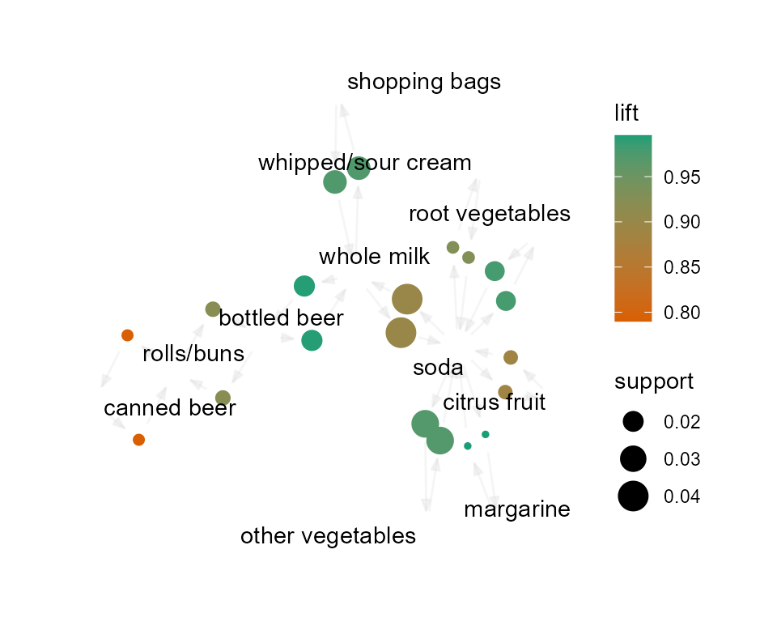

FTARM (Fast Top-K Association Rule Mining) is a proposed
algorithm that does association rule mining. Association rule mining is
a branch of data mining that deals with the identification of useful
patterns within a given dataset. Compared with other existing algorithms
that do association rule mining, FTARM is said to be more
efficient. FTARM automates most of its procedures and,
thus, it produces patterns with higher accuracy. AutoFTARM
intends to further improve the accuracy of FTARM by fully automating the
algorithm.
Below is a demonstration of FTARM's performance compared
to the performance of other algorithms that do association rule mining.
As seen in figure 1 below, for different datasets (Pumsb and Connect),
FTARM has better runtime and lower memory consumption compared to
TopKrules and ETARM algorithms (Liu et al., 2021). Its better
performance is owed to the fact that it produces much less rules that
are more interpretable (Liu et al., 2021).

Figure 1: FTARM’s Performance
Significance of AutoFTARM
There is only one algorithm (apriori) in R programming
language that does association rule mining. The apriori
algorithm is found inside the arules package. With
apriori, the user is required to provide the key parameters
(minimum support and minimum confidence) that
determine the number of rules (patterns) that are generated by the
algorithm. This is a major drawback with apriori, as well
as with the other existing algorithms, because it is quite tedious for
the users to keep on adjusting the parameters till they find the optimum
parameters that produces the best model that contains the desired set of
rules. The proposed FTARM algorithm eliminates the need for
the user to provide the minimum support value, however, the user is
still required to provide the minimum confidence value. Therefore, our
proposed AutoFTARM package intends to completely automate
the FTARM algorithm by eliminating the need for the user to provide any
of the key parameters used in association rule mining.
Demonstration of association rule mining
We used the existing Apriori algorithm to demonstrate
association rule mining and to show how the FTARM algorithm
is expected to work after it’s successful implementation:
# Load packages
library(arules)
library(knitr)
library(arulesViz)
library(dplyr)
library(RColorBrewer)
# Load data
# The arules package comes with the 'Groceries' dataset.
data(Groceries)
# Generates the items that frequently appears in the dataset
itemFrequencyPlot(Groceries, topN = 15, type = "absolute", col = brewer.pal(8,'Dark2'))
As pointed out above, the minimum support and minimum confidence values are important as they determine the number of rules generated. We used different sets of values to demonstrate the effect that the two input parameters have on the number of rules generated.
# Performing apriori with minimum support=0.002 and minimum confidence=0.05
model1 <- apriori(data = Groceries,
parameter = list(support=0.002, confidence=0.05))
# Performing apriori with minimum support=0.01 and minimum confidence=0.03
model2 <- apriori(data = Groceries,
parameter = list(support=0.01, confidence=0.03))
plot(model1, col = brewer.pal(12,'Paired'))
plot(model2, col = brewer.pal(12,'Paired'))
With minimum support of 0.002 and minimum confidence of 0.05, 10124 rules are generated by the apriori algorithm. Interpreting and visualizing all the rules is quite challenging because they are quite many. As seen in the scatterplots, there is a lot of overlap when visualizing a large number of rules. Also, with smaller number of rules, visualizing them is a challenging. We tried clustering the rules, but it does a poor job in visualizing rules. Thus, we noted that there is need for a better way to visualize generated rules that promotes interpretability.
# Visualization of some of the rules based on their lift values.
sampleRules<-tail(sort(model2,by="lift"),20)
plot(sampleRules, method="graph",control=list(type="items"), col = brewer.pal(8,'Dark2'))#> Available control parameters (with default values):
#> layout = stress
#> circular = FALSE
#> ggraphdots = NULL
#> edges = <environment>
#> nodes = <environment>
#> nodetext = <environment>
#> colors = c("#EE0000FF", "#EEEEEEFF")
#> engine = ggplot2
#> max = 100
#> verbose = FALSE
Demonstration of AutoFTARM
Our success was dependent on the implementation and functioning of
the FTARM algorithm. However, given that only the pseudo
code for FTARM existed, we had to implement the algorithm
from the ground up. FTARM is dependent on many functions
for it to work. We implemented all the functions needed by
FTARM, however, only a number of them were successful.
We used the movie_lens
dataset, which is publicly available. Only a subset of the data, with
400 observations was used. The sample data contains a list of movies
that the users gave a rating of 5. The sample data was stored in a csv
file named movie_ratings.csv, which is available on our github repository.
Demonstration FTARM’s dependent functions that were successfully implemented:
# Loading sample data
data_sample <- read.csv("C:/Users/skirw/Desktop/Academics/AutoFTRAM/movie_ratings.csv")-
tids()andtidsForTwo()- tids stands for transaction identifier of a set of items. These functions will be replaced in the future with one function that takes in a list of items, instead of only one or two items.
# tids is the transaction identifier of a set of items.
# tids determine how frequently an item appears in the transactions.
tids <- function(searchFor, DB) {
# movie_ratings implementation: count how many users watched a certain movie.
DB <- as.list(DB)
result <- lapply(DB, function(x) {
sum(x == searchFor)
})
total <- 0
for(i in result) {
if(i[1] == 1) {
total <- total + 1
}
}
return(total)
}
# The outcome tells us that 9 users have watched the movie 'Toy Story' (with movie_id = 1).
tids(1, data_sample)#> [1] 9
tidsForTwo <- function(searchFor1, searchFor2, DB) {
# calculate the number of columns or transactions that contain x and y
DB <- as.list(DB)
result <- lapply(DB, function(x) sum(x == searchFor1) != 0 && sum(x == searchFor2) != 0)
total <- 0
for(i in result) {
if(i[1]) {
total <- total + 1
}
}
return(total)
}
# The outcome tells us that 3 users have watched both 'Toy Story' (id = 1), and 'Grumpier' (id=3).
tidsForTwo(1, 3, data_sample)#> [1] 3-
sup()- Used to calculate the support value of an item in the dataset. This function helps to generate rules (patterns).
# Calculate the support value for an item.
# Support is the no of transactions (I) in DB with item i / total number of transactions in DB.
sup <- function(DB, i) {
support <- tids(i, DB) / length(DB)
return(support)
}
# The support of the movie 'Shawshank Redemption' is 0.35
sup(data_sample, 318)#> [1] 0.35-
conf()- Used to calculate the confidence level of an item in the given dataset. This function helps to generate rules (patterns).
# Calculate the confidence value for an item
# Confidence is the no of transactions with items x and y / no of transactions with item x.
conf <- function(DB, x, y) {
confidence = tidsForTwo(x, y, DB) / tids(x, DB)
return (confidence)
}
# The confidence that a user will watch both the movies 'Toy Story' (id = 1) and 'Grumpier' (id=3) is 0.3333.
conf(data_sample, 1, 3)#> [1] 0.3333333-
minConf()- Used to calculate the minimum confidence level. This function helps determine the number of rules generated.
# A list of items should be parsed into minConf and minSup
# However, we were unable to implement a tids function that takes in a list. It should be done in the future.
# Therefore, we used the tidsForTwo function instead.
minConf <- function(DB, searchFor1, searchFor2) {
maxTid = -1
x <- list()
x <- append(x, searchFor1, searchFor2)
for (i in x) {
if (tids(i, DB) > maxTid) {
maxTid = tids(i, DB)
}
}
return(tidsForTwo(searchFor1, searchFor2, DB)/maxTid)
}
minConf(data_sample, 260, 318)#> [1] 0.6-
minSup()- Used to compute the minimum support value. This function helps determine the number of rules generated.
# The minSup function calculates the minimum support value.
minSup <- function(x, data) {
return(tids(x, data)/length(data))
}
minSup(1, data_sample)#> [1] 0.45-
SortItems()- Used to sort items in descending order based on their support values.
SortItems <- function(DB) {
# Define an empty vector
itemsinData <- c()
# Store the ids of the items in the database in the empty vector
for (i in DB){
itemsinData <- c(itemsinData, i)
}
# Convert the list of items to a dataframe
new_df <- data.frame(sapply(itemsinData,c))
# Rename the column with ids
colnames(new_df)[1] ="id"
# This function returns the support value for each item.
func <- function(new_df){
return(sapply(new_df$id, function(id) sum(new_df$id == id)/nrow(new_df)))
}
# Create a new column that contains the support values of the corresponding items.
new_df$support <- func(new_df)
# Sort the items in descending order based on their support values
swapped <- new_df %>% arrange(desc(support))
swapped
}
tail(SortItems(data_sample), 5)#> id support
#> 396 123 0.0025
#> 397 594 0.0025
#> 398 595 0.0025
#> 399 539 0.0025
#> 400 1204 0.0025